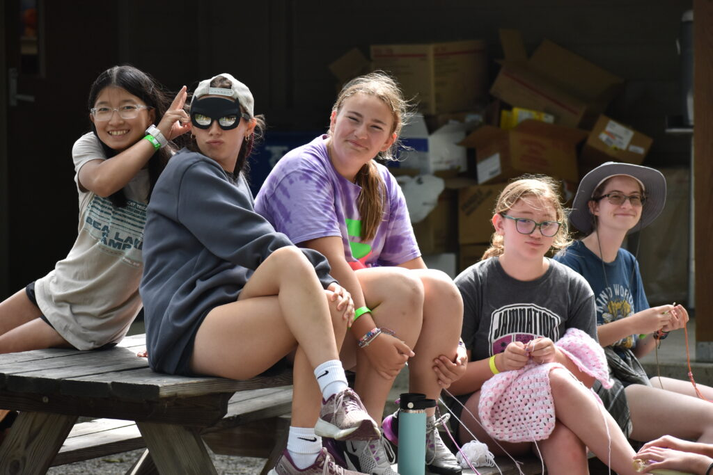
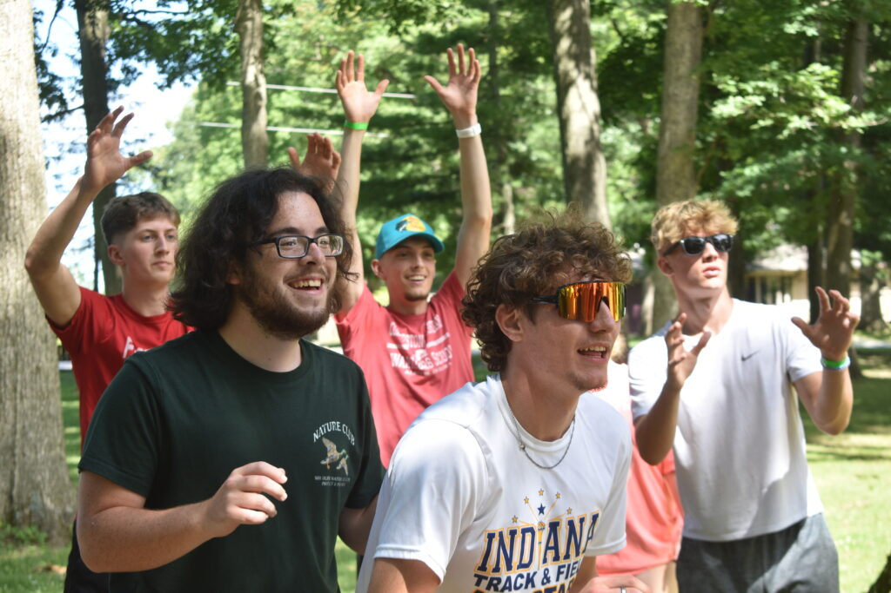

Our Mission
Faith. Adventure. Transformation.
Bear Lake Camp exists to be a Christian Ministry Center which challenges individuals toward maturity in Christ and to provide a positive environment through services and facilities.
Which Camp Week Is Right for You?

Jr. High Week
Grades 6-8 (Ages 11-14)
- Identity formation in Christ
- Peer community & belonging
- Foundational faith exploration

High School Week
Grades 9-12 (Ages 15-18)
- Leadership development
- Christian worldview formation
- Vocation & calling discernment
Hear From Families
Parent: "Our son came home with a deeper faith"
▶ Play (0:45)Camper: "I made friends who challenge me to grow"
▶ Play (0:30)Life at Camp


Get In Touch
Have questions about camp? We'd love to hear from you!